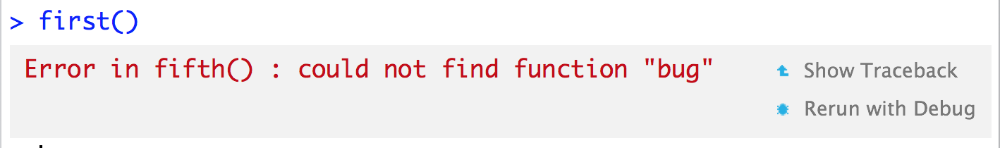
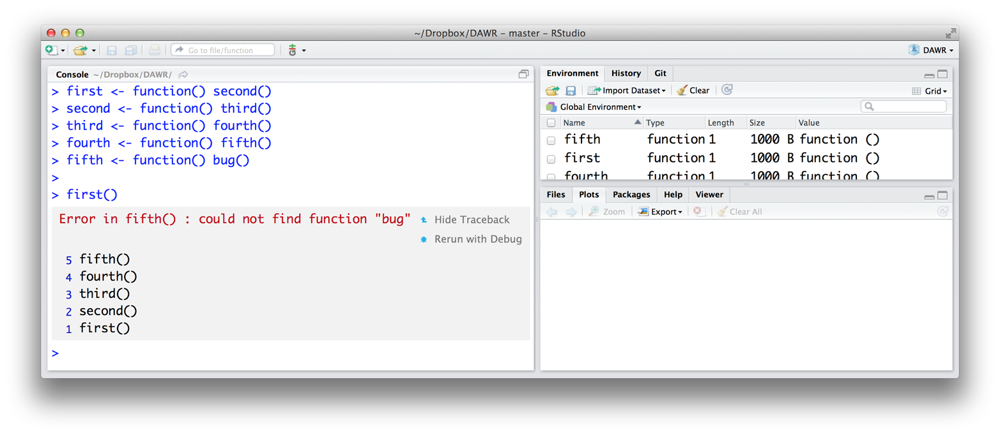
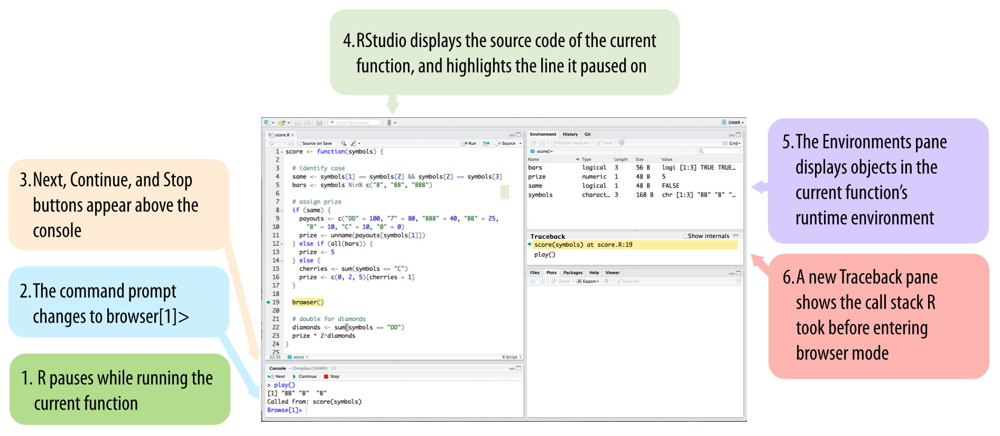
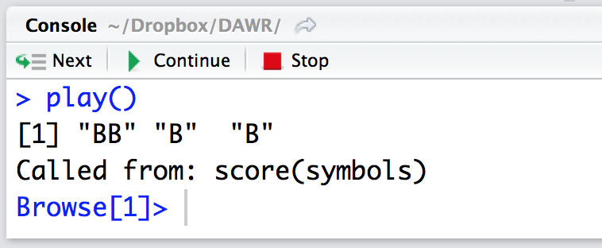
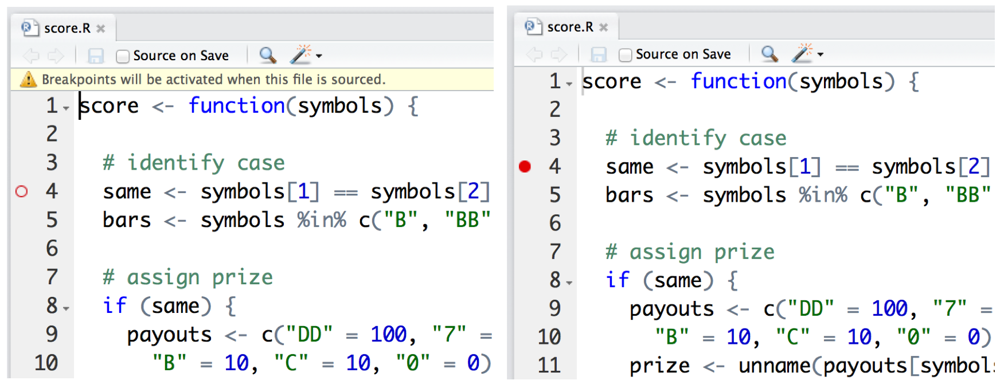

knitr::include_graphics("images/hopr_ae01.png")
この付録は、[環境（Environments）] のトピックである [環境] を参照しており、[プログラム] と [S3] の例を使用しています。この付録を最大限に活用するには、まずこれらの章を読んでおく必要があります。
Rには、RStudioが機能を強化したシンプルなデバッグツールのセットが付属しています。これらのツールを使用することで、エラーが発生したり予期しない結果が返されたりするコードの理解を深めることができます。通常、対象となるのは自身で作成したコードですが、R本体やパッケージに含まれる関数を調査することも可能です。
コードのデバッグには、コードを書くときと同じくらいの創造性と洞察力が必要になることがあります。バグが見つかる保証も、見つかったとしても修正できる保証もありません。しかし、Rのデバッグツールを活用することで、解決の助けになります。これには、 traceback 、 browser 、 debug 、 debugonce 、 trace 、そして recover 関数が含まれます。
これらのツールの使用は通常、2段階のプロセスで行われます。まず、エラーが「どこで」発生したかを特定します。次に、「なぜ」発生したのかを判断しようと試みます。最初のステップは、Rの traceback 関数で行うことができます。
traceback ツールは、エラーの場所をピンポイントで特定します。多くのR関数は他のR関数を呼び出し、それがさらに別の関数を呼び出す、といった構造になっています。エラーが発生した際、どの関数に問題があったのかがすぐには分からない場合があります。例を見てみましょう。以下の関数は互いに呼び出し合っており、最後の関数がエラーを発生させます（その理由はすぐに分かります）。
first <- function() second()
second <- function() third()
third <- function() fourth()
fourth <- function() fifth()
fifth <- function() bug()first を実行すると、 second を呼び出し、それが third 、 fourth 、 fifth と順に呼び出され、最終的に存在しない関数である bug を呼び出そうとします。コマンドラインでは以下のように表示されます。
first()
## Error in fifth() : could not find function "bug"エラーレポートは、Rが fifth を実行しようとしたときにエラーが発生したことを示しています。また、エラーの内容（ bug という名前の関数が見つからない）も示しています。この例では、なぜRが fifth を呼び出すのかは明白ですが、実際の複雑なコードでは、エラー発生時になぜその関数が呼び出されたのかが必ずしも明確ではない場合があります。
コマンドラインで traceback() と入力すると、エラーに至るまでに呼び出された一連の関数を確認できます。 traceback は「コールスタック（Call stack）」、すなわち呼び出された順に関数を並べたリストを返します。一番下の関数はコマンドラインで入力したコマンドで、一番上の関数がエラーの原因となった関数です。
traceback()
## 5: fifth() at #1
## 4: fourth() at #1
## 3: third() at #1
## 2: second() at #1
## 1: first()traceback は常に、最後に遭遇したエラーを参照します。それ以前のエラーを調べたい場合は、 traceback を実行する前にそのエラーを再現させる必要があります。
これがどのように役立つのでしょうか？第一に、 traceback は「容疑者」のリストを返します。これらの関数のいずれかがエラーを引き起こしており、リストの上にあるほど疑わしいと言えます。今回のバグは fifth にある可能性が高い（実際にそうです）ですが、より前の関数が、呼び出すべきでないときに fifth を呼び出すなど、何かおかしなことをした可能性もあります。
第二に、 traceback は、Rが予想外の経路を辿ったかどうかを示してくれます。もしそうなっていたら、挙動がおかしくなる直前の関数を調べてください。
第三に、 traceback は「無限再帰（Infinite recursion）」エラーの恐ろしい広がりを明らかにすることができます。例えば、 fifth が second を呼び出すように変更すると、ループが形成されます。 second が third を呼び、それが fourth 、 fifth 、そして再び second を呼んでループが始まります。このようなことは、実務でも思いのほか簡単に起こり得ます。
fifth <- function() second()first() を呼び出すと、Rは関数の実行を開始します。しばらくすると、同じことを繰り返していることに気づき、エラーを返します。 traceback は、Rが何をしていたかを正確に示します。
first()
## Error: evaluation nested too deeply: infinite recursion/options(expressions=)?
traceback()
## 5000: fourth() at #1
## 4999: third() at #1
## 4998: second() at #1
## 4997: fifth() at #1
## 4996: fourth() at #1
## 4995: third() at #1
## 4994: second() at #1
## 4993: fifth() at #1
## ...この traceback の出力が5,000行もあることに注目してください。RStudioを使用している場合、無限再帰エラーのトレースバックは表示されません（この出力はMacのGUIを使用して取得したものです）。RStudioは、膨大なコールスタックによってコンソールの履歴がメモリバッファから押し出されるのを防ぐため、無限再帰エラーのトレースバックを抑制します。RStudioでは、エラーメッセージから無限再帰であることを認識する必要があります。しかし、UNIXシェルやWindows、MacのGUIで実行すれば、依然としてこの圧倒的な traceback を確認することができます。
RStudioでは、 traceback を非常に簡単に利用できます。関数名を入力する必要もありません。エラーが発生するたびに、RStudioは2つのオプションを含むグレーのボックスを表示します。1つ目は、 ?fig-show-traceback に示す「Show Traceback」です。
knitr::include_graphics("images/hopr_ae01.png")
「Show Traceback」をクリックすると、グレーのボックスが展開され、 ?fig-hide-traceback のように traceback のコールスタックが表示されます。Show Tracebackオプションは、新しいコマンドを書いてもコンソールのエラーメッセージの横に残り続けます。つまり、最新のエラーだけでなく、過去のエラーのコールスタックも遡って確認できるということです。
traceback を使ってバグの原因と思われる関数を特定したとします。次はどうすべきでしょうか？その関数が実行中に（もし何かしたのなら）どのようなエラーを引き起こしたのかを突き止める必要があります。 browser を使えば、関数の実行プロセスを詳細に調べることができます。
knitr::include_graphics("images/hopr_ae02.png")
browser を使用すると、関数の実行を途中で一時停止し、制御をユーザーに戻すようRに要求できます。これにより、コマンドラインで新しいコマンドを入力できるようになります。これらのコマンドの「アクティブな環境（Active Environment）」は、通常のようにグローバル環境（Global Environment）ではなく、一時停止した関数の「実行時環境（Runtime Environment）」になります。その結果、関数が使用しているオブジェクト（Object）を確認したり、関数と同じスコープ規則で値を調べたり、関数が実行されているのと同じ条件下でコードを動かしたりすることができます。この仕組みは、関数内のバグの原因を見つけるための最良の機会を提供します。
browser を使用するには、関数の本体に browser() という呼び出しを追加して、関数を保存し直します。例えば、 [プログラム] の score 関数の途中で一時停止したい場合は、 score の本体に browser() を追加し、 score を定義する以下のコードを再実行します。
score <- function (symbols) {
# identify case
same <- symbols[1] == symbols[2] && symbols[2] == symbols[3]
bars <- symbols %in% c("B", "BB", "BBB")
# get prize
if (same) {
payouts <- c("DD" = 100, "7" = 80, "BBB" = 40, "BB" = 25,
"B" = 10, "C" = 10, "0" = 0)
prize <- unname(payouts[symbols[1]])
} else if (all(bars)) {
prize <- 5
} else {
cherries <- sum(symbols == "C")
prize <- c(0, 2, 5)[cherries + 1]
}
browser()
# adjust for diamonds
diamonds <- sum(symbols == "DD")
prize * 2 ^ diamonds
}これで、Rが score を実行するたびに、 browser() の呼び出し箇所で停止するようになります。これは [プログラム] の play 関数で確認できます。もし手元に play がない場合は、このコードを実行してアクセスしてください。
get_symbols <- function() {
wheel <- c("DD", "7", "BBB", "BB", "B", "C", "0")
sample(wheel, size = 3, replace = TRUE,
prob = c(0.03, 0.03, 0.06, 0.1, 0.25, 0.01, 0.52))
}
play <- function() {
symbols <- get_symbols()
structure(score(symbols), symbols = symbols, class = "slots")
}play を実行すると、 play は get_symbols を呼び出し、次に score を呼び出します。Rが score の処理を進めると、 browser の呼び出しに遭遇し、それを実行します。この呼び出しが実行されると、 ?fig-browser に示すように、いくつかのことが起こります。
score を実行中に browser() に遭遇すると、 ?fig-browser に示すように、いくつかのことが起こります。第一に、Rは score の実行を停止します。第二に、コマンドプロンプトが Browse[1]> に変わり、Rが制御をユーザーに戻します。これにより、新しいコマンドプロンプトで新しいコマンドを入力できるようになります。第三に、コンソールペインの上に、Next、Continue、Stopという3つのボタンが表示されます。第四に、RStudioはスクリプトペインに score のソースコードを表示し、 browser() を含む行をハイライトします。第五に、「環境（Environments）」タブの内容が変化します。グローバル環境（Global Environment）に保存されているオブジェクトを表示する代わりに、 score の実行時環境（Runtime Environment）に保存されているオブジェクトが表示されます（Rの環境システムについての詳細は [環境] を参照してください）。第六に、RStudioは新しく「トレースバック（Traceback）」ペインを開き、 browser に到達するまでにRStudioが辿ったコールスタックを表示します。最新の関数である score がハイライトされます。
現在は、ブラウザモード（Browser mode）と呼ばれる新しいRのモードに入っています。ブラウザモードはバグの発見を支援するために設計されており、RStudioの新しい表示はこのモードの操作を助けるように設計されています。
ブラウザモードで実行するコマンドはすべて、 browser を呼び出した関数の実行時環境のコンテキストで評価（Evaluate）されます。これは、新しいトレースバックペインでハイライトされている関数です。ここでは、その関数は score です。したがって、ブラウザモードにいる間、アクティブな環境は score の実行時環境になります。これにより、2つのことが可能になります。
knitr::include_graphics("images/hopr_ae03.png")
第一に、 score が使用するオブジェクト（Object）を検査できます。更新された環境ペインには、 score がローカル環境（Local Environment）に保存しているオブジェクトが表示されます。ブラウザのプロンプトでそれらの名前を入力することで、どれでも検査できます。これにより、通常はアクセスできない実行時変数（Runtime variables）の値を確認する方法が得られます。もし値が明らかに間違っていれば、バグの発見に近づいている可能性があります。
Browse[1]> symbols
## [1] "B" "B" "0"
Browse[1]> same
## [1] FALSE第二に、コードを実行して、 score が見るのと同じ結果を確認できます。例えば、 score 関数の残りの行を実行して、何か異常なことが起こらないかを確認できます。これらの行をコマンドプロンプトに入力して実行することもできますし、 ?fig-browser-buttons に示すように、プロンプトの上に表示された3つのナビゲーションボタンを使用することもできます。
最初のボタン「Next」は、 score 内の次の1行を実行します。スクリプトペインのハイライトされた行が1行進み、 score 関数内での新しい位置を示します。次の行が for ループや if ツリーのようなコードチャンクの開始である場合、Rはチャンク全体を実行し、スクリプトウィンドウでチャンク全体をハイライトします。
二番目のボタン「Continue」は、 score の残りの行をすべて実行し、ブラウザモードを終了します。
三番目のボタン「Stop」は、 score の残りの行を実行せずにブラウザモードを終了します。
knitr::include_graphics("images/hopr_ae04.png")
ブラウザのプロンプトに n、 c、 Q というコマンドを入力することでも、同じ操作が行えます。ここで一つ困ったことが起こります。もし n、 c、 Q という名前のオブジェクトを調べたい場合はどうすればよいでしょうか？オブジェクト名を入力しても機能しません。Rはブラウザモードを進める、続行する、または終了してしまいます。代わりに、 get("n")、 get("c")、 get("Q") というコマンドを使ってこれらのオブジェクトを検索する必要があります。ブラウザモードでは cont は c の同義語であり、 where はコールスタックを表示するため、これらのオブジェクトも同様に get で調べる必要があります。
ブラウザモードは、関数の視点から物事を見る助けにはなりますが、どこにバグがあるかを直接示してくれるわけではありません。しかし、ブラウザモードは仮説をテストし、関数の挙動を調査するのに役立ちます。通常、バグを特定して修正するにはこれだけで十分です。ブラウザモードはRの基本的なデバッグツールです。以下の各関数は、ブラウザモードに入るための別の方法を提供しているに過ぎません。
バグを修正したら、3回目にその関数を保存し直す必要があります。今度は browser() の呼び出しを削除した状態で保存してください。 browser の呼び出しが残っている限り、あなたや他の関数が score を呼び出すたびに、Rは停止してしまいます。
RStudioのブレークポイントは、関数に browser ステートメントをグラフィカルに追加する方法を提供します。これを使用するには、関数を定義したスクリプトを開きます。次に、ブラウザステートメントを追加したい関数本体のコード行の行番号の左側をクリックします。中空の赤い点が表示され、どこでブレークポイントが発生するかを示します。その後、スクリプトペインの上部にある「Source」ボタンをクリックしてスクリプトを実行します。中空のドットが塗りつぶされた赤いドットに変わり、関数にブレークポイントが設定されたことを示します（ ?fig-break-point を参照）。
Rはブレークポイントを browser ステートメントと同様に扱い、そこに遭遇するとブラウザモードに入ります。赤いドットをクリックすることでブレークポイントを削除できます。ドットが消え、ブレークポイントが解除されます。
knitr::include_graphics("images/hopr_ae05.png")
ブレークポイントと browser は、自分で定義した関数をデバッグするための優れた方法です。しかし、Rに最初から存在する関数をデバッグしたい場合はどうすればよいでしょうか？それは debug 関数で行うことができます。
debug を使うと、既存の関数の最初の一歩にブラウザ呼び出しを「追加」できます。これを行うには、その関数に対して debug を実行します。例えば、 sample に対して debug を実行するには次のようにします。
debug(sample)その後、Rは関数の1行目に browser() ステートメントがあるかのように振る舞います。Rがその関数を実行するたびに、即座にブラウザモードに入り、1行ずつ関数をステップ実行できるようになります。Rは、 undebug でブラウザステートメントを「削除」するまで、このように振る舞い続けます。
undebug(sample)関数が「デバッグ」モードにあるかどうかは、 isdebugged で確認できます。関数に対して debug を実行し、まだ undebug を実行していない場合は TRUE を返します。
isdebugged(sample)
## FALSEこれらすべてが面倒な場合は、私と同じように debug の代わりに debugonce を使ってみてください。Rは、次にその関数を実行したときだけブラウザモードに入り、その後は自動的に関数のデバッグ状態を解除（Undebug）します。再び関数をブラウズする必要がある場合は、もう一度 debugonce を実行すればよいだけです。
エラーが発生した際に、RStudioで debugonce と同じ状況を再現できます。「Show Traceback」の下のグレーのエラーボックスに「Rerun with debug」が表示されます（ ?fig-show-traceback ）。このオプションをクリックすると、RStudioは最初から debugonce を実行したかのようにコマンドを再実行します。Rは即座にブラウザモードに入り、コードをステップ実行できるようになります。このブラウザの挙動は、その時の実行にのみ適用されます。終了時に undebug を呼び出す心配をする必要はありません。
trace を使うと、関数の冒頭ではなく、関数の途中にブラウザステートメントを挿入できます。 trace は、関数名を文字列として受け取り、次に関数に挿入するRの式を受け取ります。また、関数のどの行に式を配置するかを伝える at 引数を指定することもできます。例えば、 sample の4行目にブラウザ呼び出しを挿入するには、次のように実行します。
trace("sample", browser, at = 4)trace を使って、 browser 以外のR関数を関数内に挿入することもできますが、そうするためには何か巧妙な理由が必要かもしれません。また、新しいコードを挿入せずに関数に対して trace を実行することもできます。その場合、Rがその関数を実行するたびに、コマンドラインに trace:<関数名> と表示されます。これは、 [S3] で私が述べた「Rはコマンドラインに何かを表示するたびに print を呼び出す」という主張をテストする素晴らしい方法です。
trace(print)
first
## trace: print(function () second())
## function() second()
head(deck)
## trace: print
## face suit value
## 1 king spades 13
## 2 queen spades 12
## 3 jack spades 11
## 4 ten spades 10
## 5 nine spades 9
## 6 eight spades 8関数に対して trace を呼び出した後、通常の状態に戻すには untrace を使用します。
untrace(sample)
untrace(print)recover 関数は、デバッグのための最後のオプションを提供します。これは traceback のコールスタックと browser のブラウザモードを組み合わせたものです。 recover は browser と同様に、関数の本体に直接挿入して使用できます。 fifth 関数を使って recover を実演してみましょう。
fifth <- function() recover()Rが recover を実行すると、実行を一時停止してコールスタックを表示しますが、それだけではありません。Rは、コールスタックに表示されている任意の関数の中でブラウザモードを開くオプションを提示します。困ったことに、コールスタックは traceback とは逆さまに表示されます。最新の関数が一番下に、元の関数が一番上に表示されます。
first()
##
## Enter a frame number, or 0 to exit
##
## 1: first()
## 2: #1: second()
## 3: #1: third()
## 4: #1: fourth()
## 5: #1: fifth()ブラウザモードに入るには、ブラウズしたい実行時環境（Runtime Environment）を持つ関数の横にある番号を入力します。どの関数もブラウズしたくない場合は、 0 を入力します。
3
## Selection: 3
## Called from: fourth()
## Browse[1]>その後は通常通りに進めることができます。 recover は、コールスタックを上下に移動して変数を検査する機会を与えてくれる、バグを解明するための強力なツールです。しかし、R関数の本体に recover を追加するのは手間がかかる場合があります。ほとんどのRユーザーは、エラーを処理するためのグローバルオプションとしてこれを使用しています。
以下のコードを実行すると、エラーが発生するたびにRが自動的に recover() を呼び出すようになります。
options(error = recover)この挙動は、Rセッションを閉じるか、あるいは以下を呼び出して挙動を解除するまで続きます。
options(error = NULL)